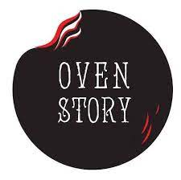

Our Clients


We hope you would love our service.for finger licking food order from our website.
We have various quisines available for you
We have wide varities of pizzas available.round, flattened base of leavened wheat-based dough topped with tomatoes, cheese, and often various other ingredients, which is then baked at a high temperature, traditionally in a wood-fired oven
Domino's has four pasta classics from which to choose: To make creamy Chicken Alfredo, we combine grilled chicken breast and rich Alfredo sauce with penne pasta.
Image result for garlic bread dominos The Dough for Dominos Garlic Bread The dough for the garlic breadsticks is made with basic pantry items – all purpose flour, sugar, yeast, and a generous amount of the garlic seasoning mix